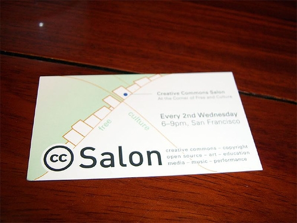
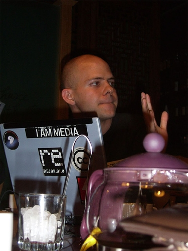

Interview with Jon Phillips
Sleepy: It is said that you helped to begin the dorkbot-socal,What experience you got from that and what's your suggestion for our dorkbot-bj?
Jon:dorkbot meetings should be hold regularly, for example, each month or each the other month, other wise it may gradually die.
Meeting group should not be too large, to avoid fractal discussion.
Sleepy: Beside dorkbot-socal, have you ever attended dorkbot meetings of other cities?
Jon: Oh, sure. I have ever been dorkbot-sf(San Fransisco) and even one in London.
Sleepy:What's your reponsibility in the CC organization and what have you done for CC?
Jon: I develope some software for CC organization, take ccHost as an example.
Besides, I am also one of the organizer for the CC San Francisco Salon.
Sleepy:What do you think about the difference and relation between software development and art creation? and what about the difference between FSF/GPL and CC organiztion/license?
Jon:To some extent, software development and art creation are similar. They are all creative issues.
FSF is for source code, CC is for content. Although for software development, source code is the content, however, it is not recommended to use CC for software. CC is more proper for the works created by software.
Sleepy: Tell us something about InkSpace, besides it is opensource, what's the difference between InkSpace and CoralDraw/Illustrator?
Jon:One great feature of InkSpace is that you can create works with CC license metadata. InkSpace integrates such function into the software.
Sleepy: What about OPAL: Open Clip Art Library. How is it going now?
Jon: Oh, it is going prett well, we already collected about 2000 piece of works. This projects seems somewhat similar to the culture and knowledge sharing project of the National Library here.
zoomquiet:How can CC make money?
Jon: Not only in China, almost in every CC Salon, people have this question. This is an important question for the development of CC.
Chunyan Wang: I would like to explain this by an example: I konw a professor who published the e-version of his book in Internet under CC licence to share with others, but at the same time, the sales of hard copy of his book become better. It's the same for musicians, if you publish your works in Internet under the protection of CC, then you work itself can be great advertisement for your CD.
Sleepy: Why CC need to be localized, there are different version of CC in different country?
Chunyan Wang: Because only if CC lincence can be adapting to local law about copyright, it can have effective protection power. That's what CC China is endeavoring to do（http://www.creativecommons.cn/）.
there is always such questions in CC salon, not only in China, but also in San Francisco.
CC can have large advertisement effect. If you publish the e-version of your works under CC, then if will be the best ads. Then the hard copy of your work can sell better.
CC have to be localized to comply with local law, otherwise it can not have the legal power to protect local artists, writers and creators.
For more information about CC Beijing Salon, please chekc this(only in Chinese, but you can download Recording of the discussion in the Salon):
http://blog.zoomquiet.org/pyblosxom/Zen/Chinese/CCSalon-2006-06-11-14-00
Photoes:
http://www.flickr.com/photos/shizhao/164709541/in/set-72057594094013006/
对Jon Phillips的访谈

JonPhillips
前记：很早在Patrick.W.Deegan牵线下跟Jon取得了联络，本意是想借他在京的机会做次dorkbotbj聚会，Jon的十来项名头里任何一个都可以做很精彩的展示，无奈他这次完全是随机来京，时间上没法安排，只好期待下次的机会了。
但借着CC Beijing Salon的机会，Sleepy跟yang2还是跟Jon碰了面，做了个简单采访，还是很有收获的，下面是正文，enjoy。
注：现场状况比较复杂，无法对Jon一对一专访，所以都是总结了他的意思，不是原话。
Sleepy：听说您曾协助促成dorkbots-ocal（south california），有什么经验跟dorkbotbj分享吗？
Jon：首先一定要将这个活动变成定期的聚会，比如一月一聚或者两月一聚，但这点很重要，否则这个活动会渐渐死掉的。
如果某个展示者有很多东西可讲，那可以定为这一个展示者的专题dorkbot，多个展示者会把聚会时间拉的太长。
此外每次聚会并不需要太多人参与，否则很容易偏离主题或者形成脱离主题的小讨论圈子。
Sleepy：除了dorkbots-ocal（http://www.dorkbot.org/dorkbotsocal），你还参加过其他那些城市的dorkbot？
Jon：嗯……，我最常住在san francisco，所以参加过http://dorkbot.org/dorkbotsf/，还曾参加过London的一次。
DeerFang（方鹿）：在san francisco，类似dorkbot的活动非常多。
Sleepy：今天是CC沙龙，那就说说你在CC组织担任的职责吧。
Jon：我主要负责一些CC软件的开发工作，比如ccHost（http://wiki.creativecommons.org/CcHost）。此外，我还是CC san francisco Salon的主要组织者。
Sleepy：你觉得自由软件基金会（FSF）和GPL，CC组织及CC Licence之间有什么不同和联系？
Jon：面向对象不同，FSF面向的对象实际上是源代码（source code），而CC面对的是内容（content）。
Sleepy：但对于软件开发而言，源代码就是其内容，那可以用CC去保护源代码吗？
Jon：可以，但我不推荐这么做。CC面向的是更广泛的知识产权，而GPL，Science Commons都是针对相对固定的范围，对这些特点内容，最好使用专门的协议。
Sleepy：说说InkSpace(http://www.inkscape.org/)这个项目吧，这款软件除了开源外，跟CorelDraw，Illustrator似乎没有太大区别啊？
Jon：InkSpace最大的特点其实是集成了CC协议，你可以直接在完成输出作品时就内嵌上CC协议的元数据（metadata）。
Sleepy：那么OPAL(Open Clip Art Library)(http://www.openclipart.org/)呢，这个项目现在进展到什么程度了？
Jon：哦，进展的非常好，我们已经有大概2000多件作品加入了OPAL，这个项目跟你们国家图书馆在做的文化资源共享项目有些类似，这个项目中国家图书馆也采用了CC协议，他们认为这是目前最好最完善的一套协议。
另：
zoomquiet：CC如何能够赢利呢？
Jon：不只是在中国，每次CC沙龙上都会有人问这个问题，就是CC如何make money。这是很重要的问题，也关系到CC的发展问题。
王春燕：我想举个例子来说明，国外一位教授将他书稿的电子版以CC协议发布在网络上跟大家共享，但同时他这本书的纸质版本销量有了大幅提升。对音乐家也是如此，你将作品用CC保护后公布在网络上，就很可能带来更多人买你的CD，你的作品本身就成为一个极好的广告。
Sleepy：为什么CC要本地化，不同的国家会有不同版本的CC？
王春燕：这是因为CC这个协议必须要与本国的版权法相适应，否则是不具有保护力的，这也是CC中国（http://www.creativecommons.cn/）正在努力在做的事情。
更多关于本次CC Salon的更多信息请看zoomquiet的个人报道（还有现场录音可以下载）：
http://blog.zoomquiet.org/pyblosxom/Zen/Chinese/CCSalon-2006-06-11-14-00
CC发布会及CC沙龙照片：
http://www.flickr.com/photos/shizhao/164709541/in/set-72057594094013006/